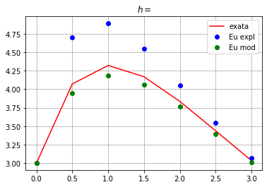
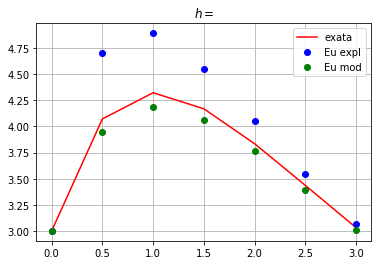
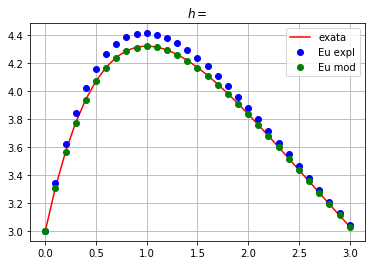
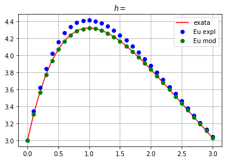

Métodos de Taylor de Ordem Superior#
Métodos que usam o desenvolvimento em série de Taylor de \(y(t)\) teoricamente fornecem solução para qualquer ED. Sob o ponto de vista computacional, Métodos de Taylor de ordem mais elevada são inaceitáveis, pois, exceto uma classe restrita de funções, o cálculo das derivadas totais é complicado.
Estes métodos são obtidos retendo-se termos de ordem superior na série de Taylor. Por sua vez, o Método de Euler é um caso particular, como veremos a seguir, já que tem os termos de ordem \(\geq 2\) truncados na série.
Suponhamos que \(y(t)\) a solução para o PVI \(\begin{cases} y' = f(t,y) \\ a \leq t \leq b \\ y(a) = \alpha \end{cases}\) é de classe \(\mathcal{C}^{n+1}\). Haja vista que a série de Taylor de \(y(t)\) em relação ao ponto \(t_i\) pode ser expandida até a ordem \(n\) como
para \(\xi_i \in (t_i,t_{i+1})\).
A diferenciação sucessiva de \(y(t)\) fornece
Substituindo-as na série de Taylor, temos:
Excluindo o termo de resto envolvendo \(\xi\), obtemos o Método de Taylor de ordem \(n\) através do seguinte processo iterativo
em que
Logo, vemos que o método de Euler é o Método de Taylor de ordem 1. As derivadas sucessivas podem ser calculadas pela Regra da Cadeia. Por exemplo,
Todavia, os métodos da família Runge-Kutta são alternativas numéricas melhores para métodos de Taylor pois simulam o efeito das derivadas a partir de cálculos médios que não necessitam de derivadas analíticas. Estudaremos métodos de Runge-Kutta em breve.
Exemplo: Aplique o Método de Taylor de ordem 2 ao PVI
Para o método de ordem 2, precisamos da primeira derivada de \(f(t,y(t)) = y(t) − t^2 + 1\) em relação a \(t\). Então,
de modo que
Como \(N = 10\), temos \(h = 0.2\) e \(t_i = 0.2i, \forall i = 1,2,...,10\). Assim, o método de segunda ordem torna-se
Os dois primeiros passos dão a aproximação:
Os demais passos seguem da mesma forma
Métodos de Runge-Kutta#
O objetivo principal dos métodos de Runge-Kutta (RK) é imitar o comportamento de \(f(t,y)\) avaliando-a em vários pontos “abstratos” dentro de um mesmo passo numérico.
Esquemas do tipo RK são usados para reter precisão e substituir aproximações de baixa ou alta ordem via séries de Taylor. São populares na resolução de PVIs e mais simples de programar do que os métodos de Taylor.
Forma geral#
A forma geral de um método RK é dada por:
O termo \(F(t_n,w_n;h)\) representa uma inclinação média, de maneira que, informalmente, métodos RK seja refraseados como:
valor futuro = valor atual + passo x inclinação média.
Se fizéssemos uma analogia com o movimento uniforme da física, \(w\) seria uma posição do espaço, \(h\) o tempo e \(F\) a velocidade, resultando em
posição final = posição inicial + tempo x velocidade
ou, equivalentemente, \(s_f = s_0 + vt\).
Métodos de Runge-Kutta de 2a. ordem#
Para métodos RK2, a inclinação média é dada pela expressão
em que \(\alpha, \beta, b_1, b_2 \in \mathbb{R}\) são constantes a serem determinadas de modo que atinjamos um erro de truncamento
i.e., seja de terceira ordem.
Abaixo, vamos resolver o PVI:
\begin{cases} y’ = -1.2y + 7e^(-0.3x) \ y(0) = 3 \ 0 < x \leq 2 \ h = 1,0.5,0.25,0.1 \end{cases}
# definição
e = np.exp(1)
# dados de entrada
a = 0
b = 3.0
ns = [4,7,13,31]
w0 = 3
ode = '-1.2*y + 7*e**(-0.3*x)'
# soluções numéricas
for n in ns:
# MEE
x,we = ode_euler_expl(ode,a,b,n,w0)
# MEM
x,wm = ode_euler_mod(ode,a,b,n,w0)
# conversao de dados
x = np.asarray(x)
we = np.asarray(we)
wm = np.asarray(wm)
# solução exata
y = 70/9*e**(-0.3*x) - 43/9*e**(-1.2*x)
# curvas
plt.figure()
plt.plot(x,y,'r',label='exata')
plt.plot(x,we,'bo',label='Eu expl')
plt.plot(x,wm,'go',label='Eu mod')
plt.legend()
tit = '$h = ' + str((b-a)/(n-1)) + '$'
plt.title('$h=$')
plt.grid()
 

 
